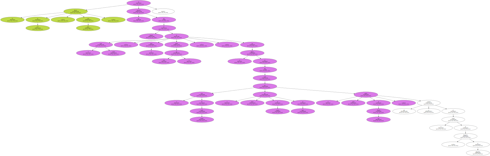
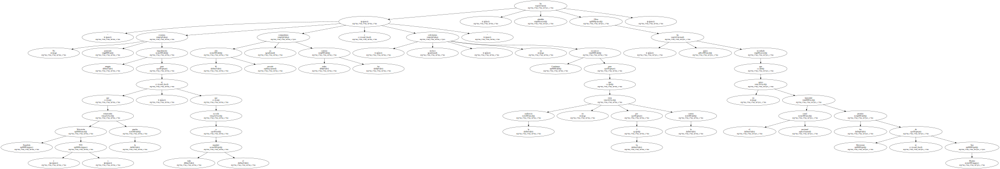
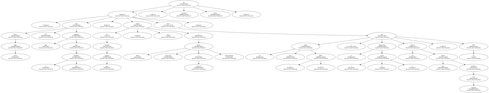
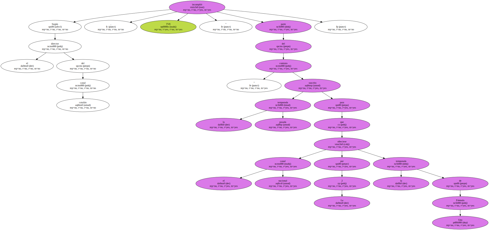

La dirección de la Televisión de Catalunya ( TV3 ) ha asegurado hoy que ha puesto todos los medios para que toda la audiencia española pueda seguir el Gran Premio de España de Fórmula Uno , así como el resto de carreras de esta temporada.

El director de TV3 , Lluís Oliva , ha explicado hoy que el canal catalán " ha alargado la mano todo lo que ha podido " , con el objetivo de que el resto del estado español pueda ver el primer fin de semana de mayo la quinta prueba de Fórmula Uno , que se celebrará en el circuito de Montmeló , en Barcelona.
" No estamos poniendo ningún impedimento para que Televisión Española ( TVE ) retransmita la prueba , ni que acceda a todo el mundial . El año pasado ya compartimos todas las carreras e , incluso , no solicitamos oscurecer Catalunya para que la audiencia no viera por La 2 la carrera " , ha añadido Oliva , quien ha recordado que el canal nacional no quiso transmitir los premios de Silverstone ni San Marino.
" Hace cuatro años TV3 hizo una apuesta por la Fórmula Uno . Si hicimos una apuesta , ahora no vamos a hacer partícipes a terceros gratuitamente . El canal vasco ( ETB-1 ) y el valenciano ( Canal 9 ) son los únicos que fueron sensibles con nosotros , pero no TVE " , ha aclarado Oliva.
Según el director del canal catalán , TVE " incumplió parte del contrato " suscrito la temporada pasada para que el canal nacional ofreciese por La 2 la temporada de Fórmula Uno.
